1А · Пример для показа
Точки M, N и P — середины рёбер BA, BC и BB₁ куба. Построй сечение плоскостью MNP.
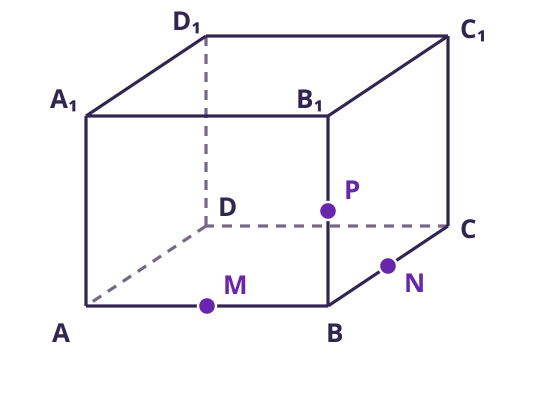
Подсказка
Найди общую грань для M и N.
§ 4, п. 12–14 · два тела и главный навык главы — построение сечений
Возьмём треугольник ABC и точку D вне его плоскости. Соединим D с вершинами — получим ещё три треугольника DAB, DBC, DCA. Поверхность из четырёх треугольников называется тетраэдром и обозначается DABC.
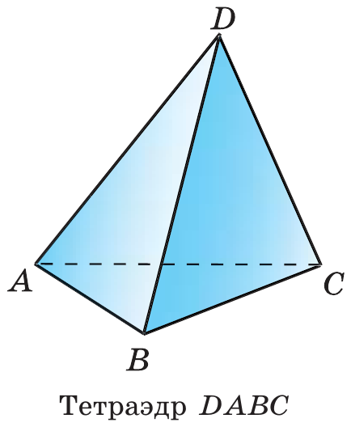
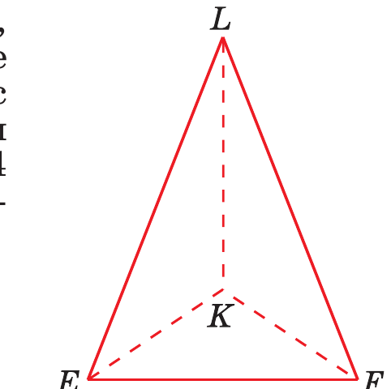
| Элемент | Сколько | Пример |
|---|---|---|
| Грани (треугольники) | 4 | ABC, DAB, DBC, DCA |
| Рёбра | 6 | AB, BC, CA, DA, DB, DC |
| Вершины | 4 | A, B, C, D |
| Пары противоположных рёбер | 3 | AD и BC, BD и AC, CD и AB |
Противоположные рёбра — рёбра без общих вершин. Они всегда скрещиваются (урок 3: одно лежит в грани, другое пересекает её плоскость в точке вне первого).
Основание — грань, которую мы условились считать нижней; остальные три — боковые грани. Какую грань назвать основанием — договорённость.
Как рисовать: четыре точки-вершины, и каждую соединяем с каждой (получится 6 рёбер). Рёбра, которые закрыты от нас самим телом, рисуем штрихом. На рис. 34 штриховое одно ребро — AC, на рис. 35 мы смотрим сверху, и закрыты три ребра EK, KF, KL.
Возьмём два равных параллелограмма ABCD и A₁B₁C₁D₁ в параллельных плоскостях так, что AA₁, BB₁, CC₁, DD₁ параллельны. Боковые четырёхугольники тоже окажутся параллелограммами: например, у ABB₁A₁ стороны AA₁ ∥ BB₁ по построению, а AB ∥ A₁B₁ по свойству 1° параллельных плоскостей (урок 4). Поверхность из шести параллелограммов — параллелепипед ABCDA₁B₁C₁D₁.
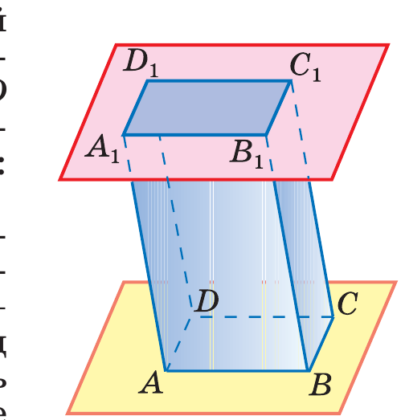
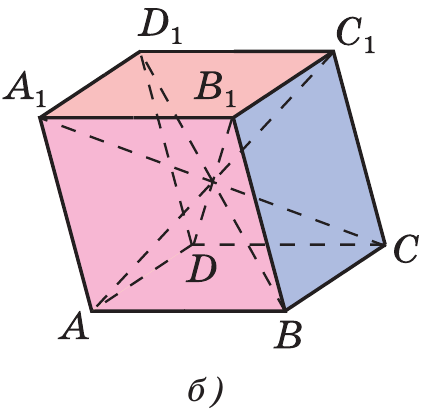
| Элемент | Сколько | Комментарий |
|---|---|---|
| Грани | 6 | все — параллелограммы |
| Рёбра | 12 | по 4 в каждом из трёх направлений |
| Вершины | 8 | |
| Диагонали | 4 | AC₁, BD₁, CA₁, DB₁ |
Смежные грани — имеют общее ребро. Противоположные грани — не имеют общих рёбер (таких пар три). Противоположные вершины — не лежат в одной грани. Диагональ параллелепипеда — отрезок, соединяющий противоположные вершины (не путать с диагональю грани!).
Отрезок AC легко принять за «диагональ параллелепипеда», но это диагональ грани ABCD: обе его точки лежат в одной грани. Диагональ параллелепипеда проходит сквозь тело, из нижней грани в верхнюю. Быстрая проверка: концы диагонали параллелепипеда не лежат ни в одной общей грани.
Противоположные грани параллелепипеда параллельны и равны.
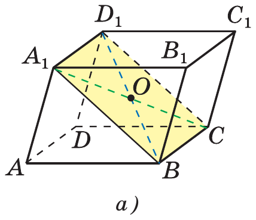
Докажем для граней ABB₁A₁ и DCC₁D₁.
Параллельность. AB ∥ DC (грань ABCD — параллелограмм) и AA₁ ∥ DD₁ (грань ADD₁A₁ — параллелограмм). Две пересекающиеся прямые одной грани параллельны двум прямым другой ⟹ по признаку (урок 4) грани параллельны.
Равенство. AB = DC, AA₁ = DD₁; углы A₁AB и D₁DC равны, так как их стороны сонаправлены (урок 3). Два параллелограмма с равными соседними сторонами и равным углом между ними равны. ∎
Диагонали параллелепипеда пересекаются в одной точке и делятся ею пополам.
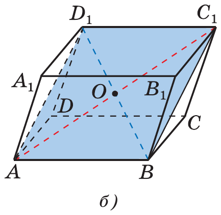
Шаг 1. Четырёхугольник A₁D₁CB: A₁D₁ ∥ AD ∥ BC и A₁D₁ = AD = BC ⟹ это параллелограмм. Его диагонали A₁C и D₁B пересекаются в точке O и делятся ею пополам.
Шаг 2. Четырёхугольник AD₁C₁B — тоже параллелограмм (так же: AB ∥ D₁C₁ и равны). Его диагонали AC₁ и D₁B делятся пополам точкой пересечения. Но середина D₁B — это O. Значит, AC₁ тоже проходит через O и делится ею пополам.
Шаг 3. Четырёхугольник A₁B₁CD — тоже параллелограмм (A₁B₁ ∥ DC и они равны). Его диагонали A₁C и B₁D делятся пополам точкой пересечения, а середина A₁C — это O. Значит, и четвёртая диагональ DB₁ проходит через O и делится ею пополам. ∎
Секущая плоскость тетраэдра (параллелепипеда) — любая плоскость, по обе стороны от которой имеются точки данного тетраэдра (параллелепипеда). Она пересекает грани по отрезкам. Сечение — многоугольник, сторонами которого являются эти отрезки.
Представь, что тело — кусок сыра, а секущая плоскость — нож. Срез на сыре и есть сечение. Сколько сторон может быть у сечения? Не больше, чем граней: каждая грань даёт не более одной стороны.
| Тело | Граней | Какие сечения возможны |
|---|---|---|
| Тетраэдр | 4 | треугольник, четырёхугольник |
| Параллелепипед | 6 | треугольник, четырёх-, пяти-, шестиугольник |
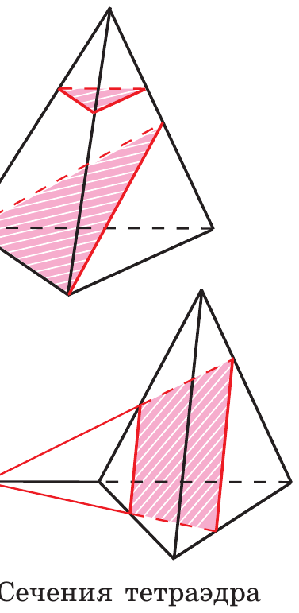
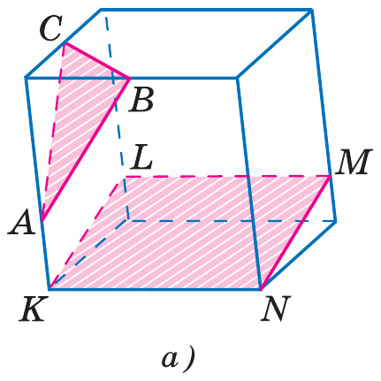
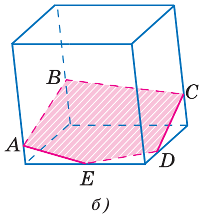
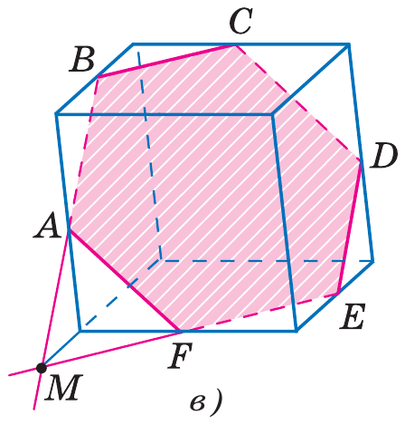
Если две точки секущей плоскости лежат в одной грани, соединяем их отрезком — это сторона сечения (аксиома А2). Точки, у которых нет общей грани, напрямую не соединяем: такой отрезок прошёл бы внутри тела и не лежал бы ни в одной грани, а сторона сечения всегда лежит в грани.
Если секущая плоскость пересекает две параллельные грани, то отрезки сечения на них параллельны (свойство 1° параллельных плоскостей, урок 4). У параллелепипеда противоположные грани параллельны — значит, это правило работает всегда.
Если в одной грани есть две точки сечения, а нужно перейти в соседнюю грань, продлеваем отрезок сечения до пересечения с прямой, содержащей ребро соседней грани. Получаем точку, общую для секущей плоскости и плоскости соседней грани (её называют точкой следа). Две такие общие точки задают прямую, по которой секущая плоскость режет плоскость грани (аксиома А3).
Порядок действий при построении сечения — задавай себе эти вопросы по очереди:
Самая частая ошибка — «пересекать» прямые, лежащие в разных плоскостях. На рисунке скрещивающиеся прямые тоже могут казаться пересекающимися, но это только обман изображения: в пространстве общей точки у них нет. Прямую NP можно продлевать до пересечения с BC только потому, что обе лежат в одной грани BCD. Перед каждым «продлеваю до пересечения» спрашивай себя: «в какой плоскости лежат обе прямые?»
Три построения: два в тетраэдре и одно в параллелепипеде. Перед каждым «продлеваю до пересечения» спрашиваем себя: в какой одной плоскости лежат обе прямые?
K — середина ребра DA тетраэдра DABC, точка L лежит на ребре DB, DL : LB = 1 : 2, M — середина ребра AC. Построй сечение тетраэдра плоскостью KLM. В каком отношении сечение делит ребро BC, считая от B?
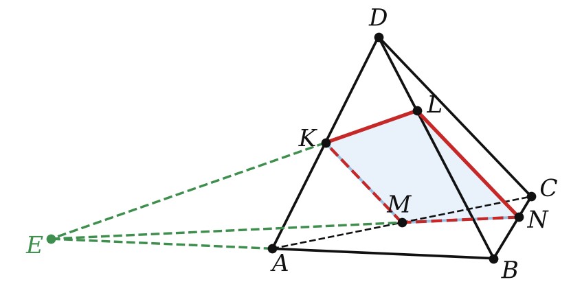
Итог: четырёхугольник KLNM; BN : NC = 2 : 1.
M — середина ребра AB тетраэдра DABC, точка N лежит на ребре AC, AN : NC = 2 : 1, G — точка пересечения медиан грани DBC. Построй сечение тетраэдра плоскостью MNG.
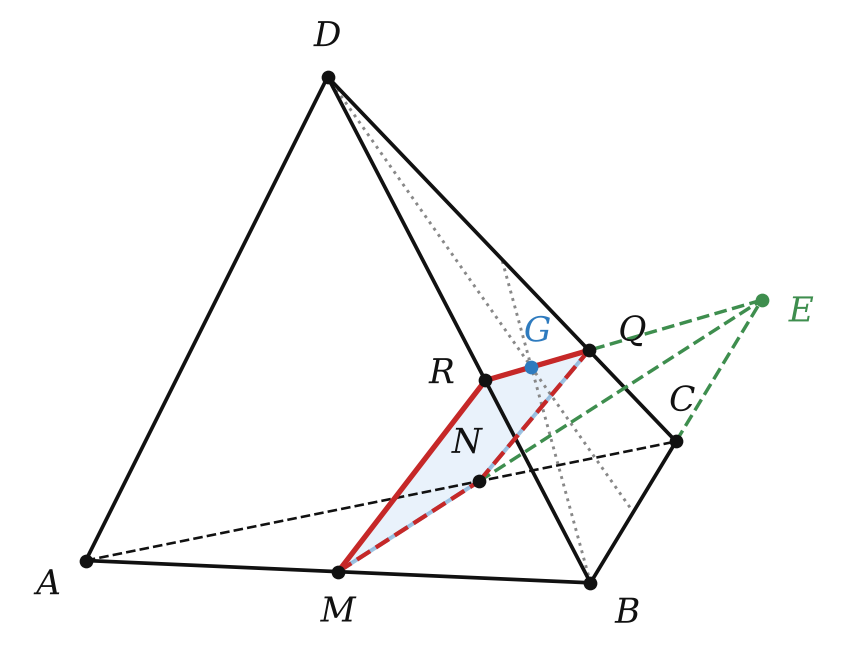
Итог: четырёхугольник MNQR (Q ∈ DC, R ∈ DB).
На рёбрах AA₁, AB, CC₁ параллелепипеда ABCDA₁B₁C₁D₁ взяты точки M, N, K: AM : MA₁ = 1 : 3, N — середина AB, CK : KC₁ = 1 : 3. Построй сечение плоскостью MNK. Какой многоугольник получился? В каком отношении сечение делит рёбра BC и DD₁?
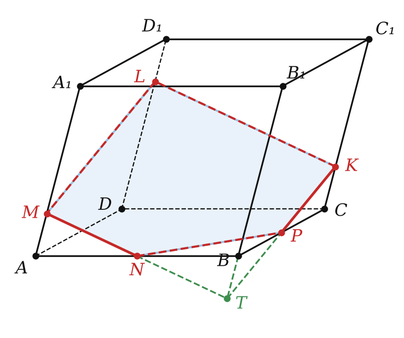
Итог: пятиугольник MNPKL; BP : PC = 1 : 1; DL : LD₁ = 3 : 1.
В каждой паре разберите задачу А вместе. Затем откройте задачу Б: точки расположены иначе, но первый шаг и способ построения те же.
Перед каждой линией назови грань, на которой она лежит. Если застрял, открой подсказку к первому шагу. На доске ищи «Чертёж из урока» → «Атанасян · урок 5 · Парные задания».
Точки M, N и P — середины рёбер BA, BC и BB₁ куба. Построй сечение плоскостью MNP.

Найди общую грань для M и N.
На рёбрах BA, BC и BB₁ куба отмечены M, N и P: BM = ⅔ BA, BN = ⅓ BC, BP = ⅔ BB₁. Построй сечение плоскостью MNP.
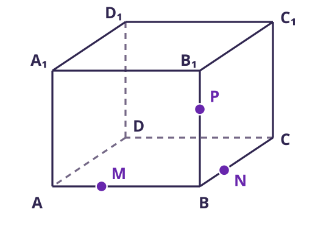
На какой грани можно сразу соединить M и N? Затем найди грань для N и P.
M — середина ребра DA тетраэдра DABC. Через M проведена плоскость, параллельная грани ABC. Отметь её пересечения с DB и DC и дострой сечение.
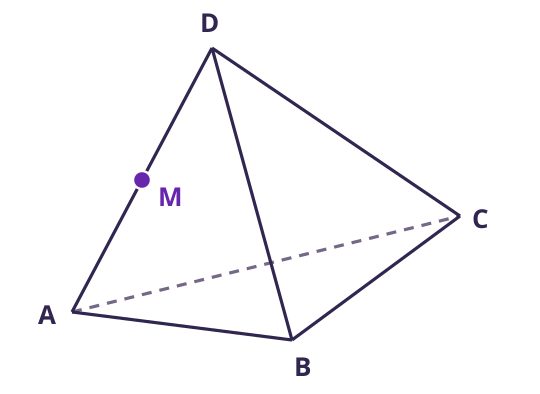
Начни с грани DAB. Как направить линию через M?
M лежит на ребре DB тетраэдра DABC, причём DM = ⅓ DB. Через M проведена плоскость, параллельная грани ABC. Найди пересечения с DA и DC и дострой сечение.
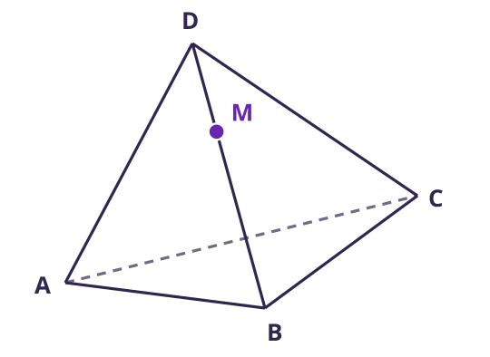
Точка M теперь на DB, но грань DAB по-прежнему подходит для первого шага.
В тетраэдре DABC точка M лежит на AB, а N и P — на DB и DC. AM = ⅓ AB, DN = ⅓ DB, DP = ⅓ DC. Построй сечение MNP и найди ещё одну вершину.
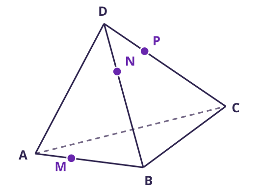
Сравни направления NP и BC.
В тетраэдре DABC точка M лежит на AB, а N и P — на DB и DC. AM = ⅔ AB, DN = ⅔ DB, DP = ⅔ DC. Построй сечение MNP и найди ещё одну вершину.
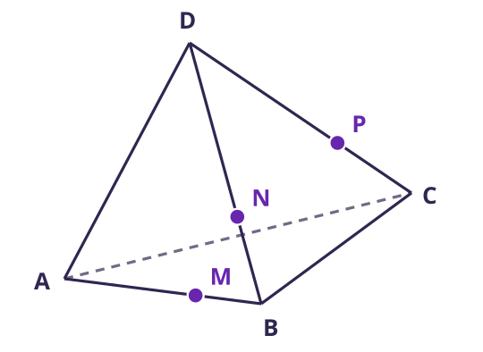
Снова начни с отрезков MN и NP. Как перенести направление NP в основание?
Точки M, N и P лежат на AA₁, BB₁ и CC₁ куба. Отрезки AM, BN и CP составляют ¼, ½ и ⅝ ребра. Найди четвёртую вершину сечения MNP.
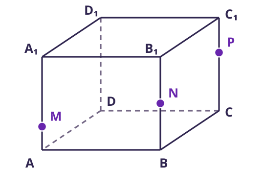
NP лежит на правой грани. Какая грань ей параллельна?
Точки M, N и P лежат на AA₁, BB₁ и CC₁ куба. Отрезки AM, BN и CP составляют ⅜, ⅝ и ½ ребра. Найди четвёртую вершину сечения MNP.
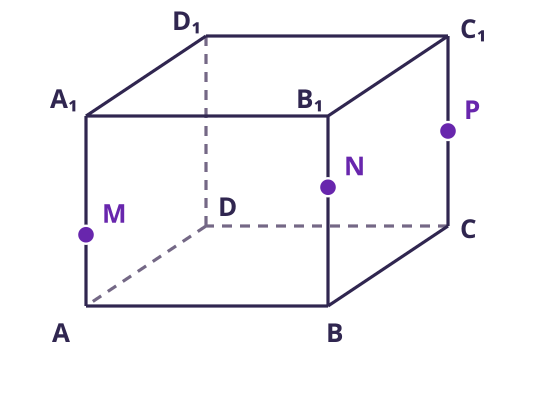
Через M проведи на левой грани линию в том же направлении, что NP на правой.
M лежит на AA₁, N — на AB, P — на CC₁ куба. AM = ¼ AA₁, AN = ⅗ AB, CP = ¼ CC₁. Построй сечение MNP.
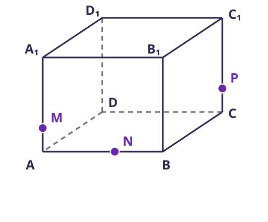
Продли MN за N и BB₁ за B до пересечения.
M лежит на AA₁, N — на AB, P — на CC₁ куба. AM = ⅓ AA₁, AN = ½ AB, CP = ¼ CC₁. Построй сечение MNP.
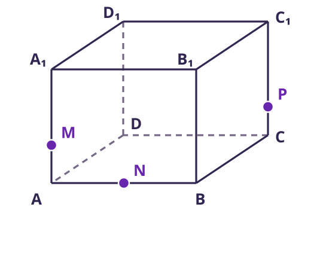
Сначала найди общую точку прямых MN и BB₁. На какой грани её можно использовать вместе с P?
Перенеси рисунок на бумагу или на доску. Отмеченные точки уже лежат в секущей плоскости. Найди недостающие вершины и замкни контур: соединяй только точки одной грани. Стороны сечения на скрытых гранях проведи штрихом.
На доске открой «Чертёж из урока» → «Атанасян · урок 5 · Дострой сечение» и выбери номер задачи.
M и N — середины рёбер DA и DB. Секущая плоскость проходит через M и N и параллельна грани ABC. Найди её пересечение P с ребром DC и дострой сечение.
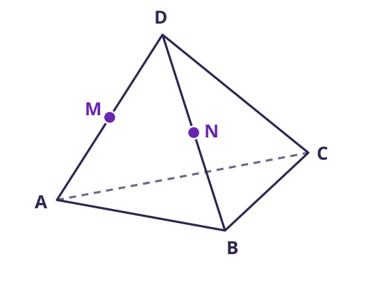
В грани DAC проведи через M прямую, параллельную AC.
M, N и P — середины рёбер AB, BD и CD соответственно. Построй сечение плоскостью MNP. На каком ребре лежит новая вершина Q?
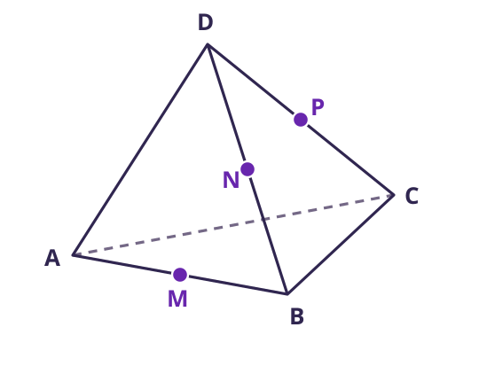
Соедини M с N и N с P. Средняя линия NP параллельна BC: как использовать это в грани ABC?
На рёбрах AA₁, BB₁, CC₁ отмечены точки M, N, P. Отрезки AM, BN, CP составляют ¼, ½ и ¾ ребра соответственно. Найди точку на DD₁ и построй сечение плоскостью MNP.
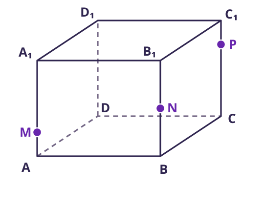
Отрезок NP лежит в грани BCC₁B₁. Через M на противоположной грани проведи прямую, параллельную NP.
M и N — середины AA₁ и AB, точка K лежит на CC₁, причём CK = ¼ длины ребра. Построй сечение плоскостью MNK. Сколько новых вершин понадобилось?
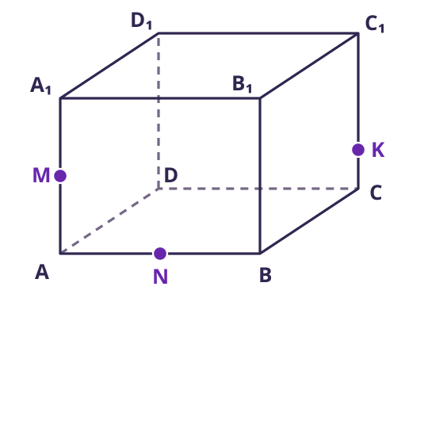
Продли MN и BB₁ до пересечения в точке T. Проведи прямую TK в соседней грани. Дальше используй параллельность следов на противоположных гранях.
На рёбрах AB и AD отмечены точки M и N на расстоянии трети соответствующего ребра от A. Через них проходит плоскость, параллельная грани BCD. Найди точку P на AC и дострой сечение.
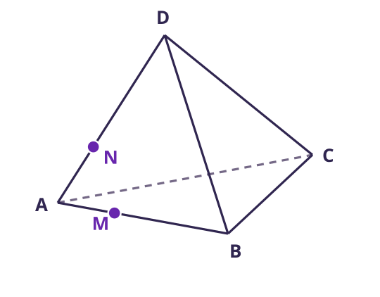
Грани ABC и BCD имеют общее ребро BC. Как направлен след в грани ABC?
Точки M и N делят рёбра AB и AC в отношении 1 : 2, считая от A. Точка P — середина CD. Построй сечение плоскостью MNP, отметив ещё одну вершину.
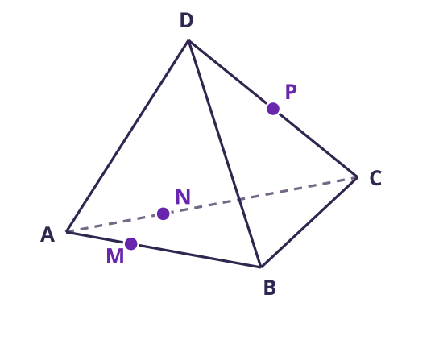
Сравни направления MN и BC. Где можно провести через P параллельную им прямую?
M — середина AB, AN = ¼AC, P — середина CD. Построй сечение плоскостью MNP. На каком ребре появится четвёртая вершина?
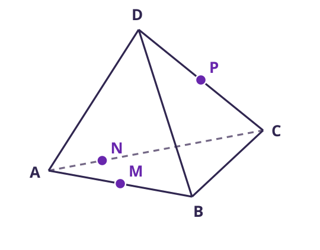
Продли MN и BC до пересечения. Найди грань, в которой уже есть точка P и полученная вспомогательная точка.
AM = ⅓AB, BN = ⅓BC. Секущая плоскость проходит через M и N параллельно прямой AD. Найди точку Q на BD и дострой сечение.
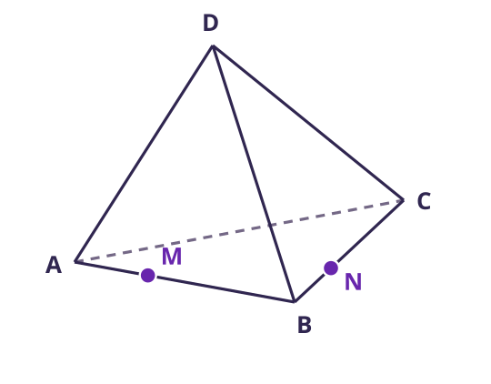
В грани ABD через M можно провести прямую в заданном направлении.
M и N — середины AB и AD. Через них проходит плоскость, параллельная плоскости A₁BD. Отметь её пересечение P с ребром AA₁ и построй сечение.
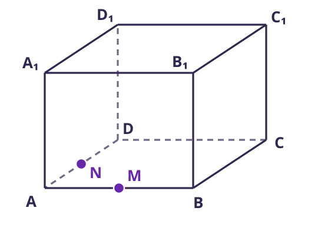
Плоскость A₁BD пересекает переднюю грань по прямой A₁B.
M и N — середины AB и DC, P — середина B₁C₁. Построй сечение плоскостью MNP. Будет ли P вершиной сечения?
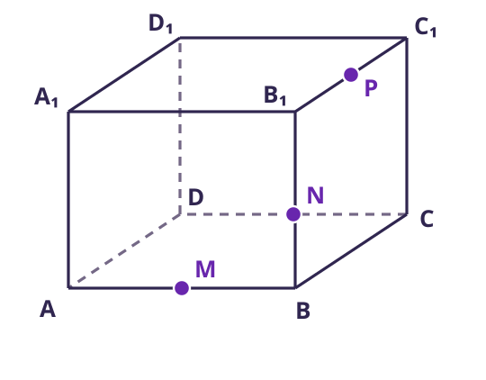
На верхней грани проведи через P прямую, параллельную MN. С каким ребром она совпадает?
На рёбрах AA₁, BB₁, CC₁ лежат точки M, N, P. Отрезки AM, BN, CP составляют ¼, ¾ и ¼ ребра. Дострой сечение плоскостью MNP.
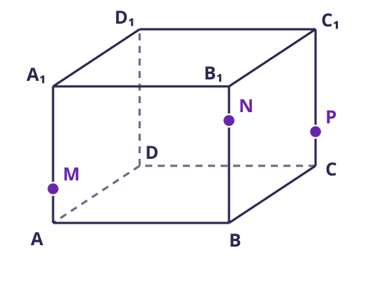
Пары противоположных граней помогут перенести на другие грани направления MN и NP.
AM = ¾AD, N — середина A₁B₁, A₁P = ¼A₁D₁. Построй сечение плоскостью MNP. Найди ещё две вершины.
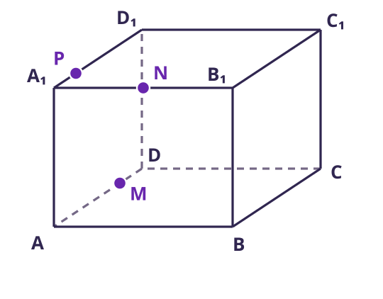
Начни с NP на верхней грани. Где провести параллель к нему через M?
M и N — середины рёбер BC и CC₁. Построй сечение плоскостью AMN. Проверь, проходит ли она ещё через одну вершину куба.
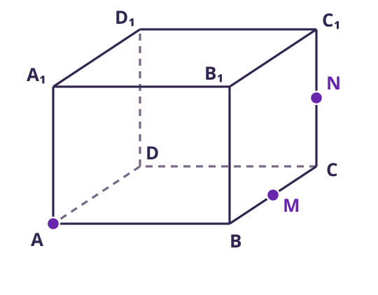
Есть отрезок сечения в правой грани и известная точка A в левой.
Точки M, N, P — середины рёбер A₁B₁, BB₁ и DC. Построй сечение плоскостью MNP. Сколько новых вершин появится?
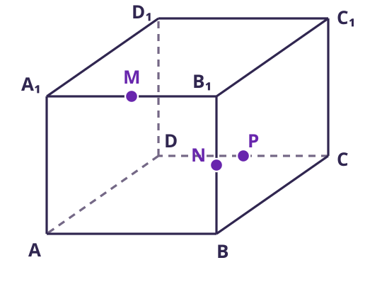
Продли MN до пересечения с прямой AB. На какой грани появятся сразу две точки секущей плоскости?
Для каждого сечения отметь новые вершины, замкни контур и объясни, на какой грани лежит каждая сторона. Заготовки на доске: «Чертёж из урока» → «Атанасян · урок 5 · Сложные сечения».
В тетраэдре DABC точка M — середина AB, AN = ⅓ AC, BP = ⅖ BD. Построй сечение плоскостью MNP. Найди отношение CQ : QD, где Q — новая вершина сечения.
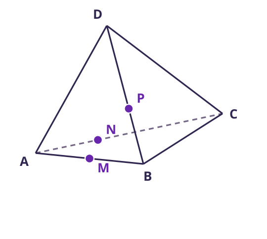
Продли MN и BC до пересечения. На какой грани можно использовать эту точку вместе с P?
В кубе M — середина AA₁, CP = ¼ CC₁. Точка N находится внутри грани ABB₁A₁: от A до неё нужно пройти ⅓ ребра в направлении AB и подняться на ¼ ребра. Построй сечение плоскостью MNP. Является ли N вершиной сечения?
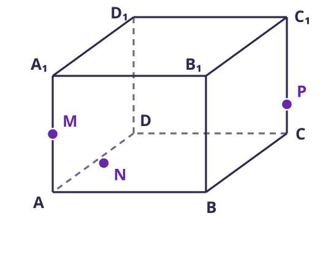
Проведи прямую MN. Где она пересекает AB и продолжение BB₁?
В кубе M, N и P — середины рёбер BC, DD₁ и A₁B₁ соответственно. Построй сечение плоскостью MNP. Определи, является ли полученный многоугольник правильным.
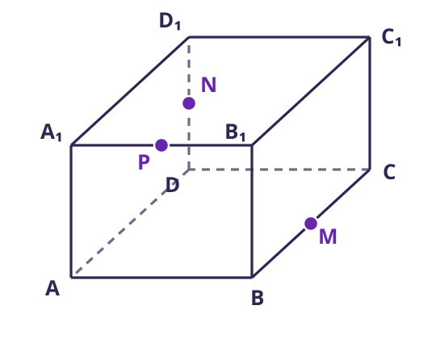
Возьми A за начало координат и ребро куба за единицу. Что одинаково у суммы координат M, N и P?
В пирамиде SABCD основание ABCD — квадрат. Точки M и N — середины BC и CD. Точка P лежит на BS, причём BP : PS = 1 : 2. Построй сечение плоскостью MNP и найди отношение AR : RS, где R — её пересечение с AS.
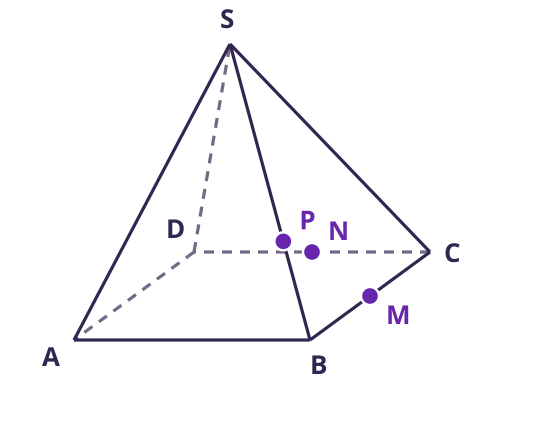
Один новый отрезок можно провести параллельно MN. Для другой вершины пригодится продолжение MN до прямой AB.
В GeoGebra 3D сечение строится одной командой. Сначала построй сечение на бумаге, потом проверь себя.
Двигайте точки M, N, P — сечение меняется: становится то треугольником, то четырёхугольником. Поставьте N и P так, чтобы NP ∥ BC, — и посмотрите особый случай задачи 1.
Если команда IntersectPath недоступна в вашей версии, используйте Intersect(<плоскость>, <многогранник>) — результат тот же.
Сначала устно, потом письменно. Решай с обоснованием: на каждый шаг — ссылка на аксиому, теорему или признак.
Выполни те задачи Д1–Д6, которые указаны в «Домашке». Перенеси заготовку в тетрадь или вставь на доску: «Чертёж из урока» → «Атанасян · урок 5 · Домашняя работа». Дострой контур, отметь новые точки и кратко объясни ход построения. Стороны на скрытых гранях проведи штрихом.
Точки M, N и P — середины рёбер AB, AD и AA₁ куба. Построй сечение плоскостью MNP. Укажи грань, на которой лежит каждая сторона сечения.
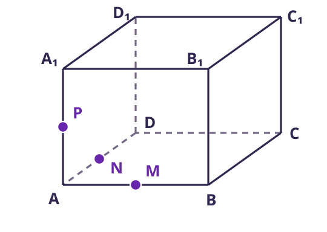
На ребре DA тетраэдра DABC отмечена точка M, причём DM : MA = 1 : 2. Через M проведена плоскость, параллельная грани ABC. Отметь её пересечения с DB и DC и построй сечение.
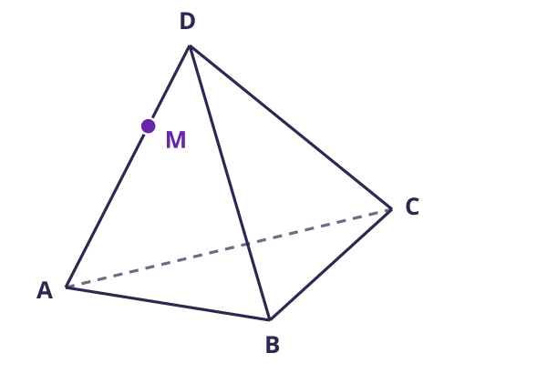
Плоскость проходит через рёбра AB и C₁D₁ куба. Построй сечение. Объясни, какие две грани дают остальные стороны сечения.
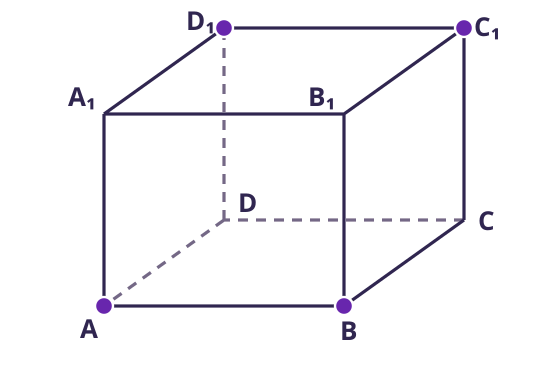
Точки K и L — середины рёбер BB₁ и DD₁ куба. Построй сечение плоскостью AKL. Проверь, проходит ли она ещё через вершину куба.
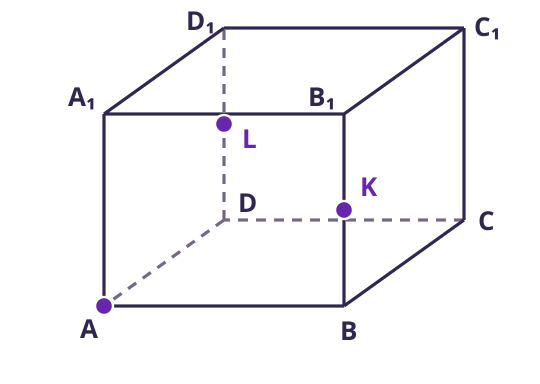
В тетраэдре DABC точки M и P — середины рёбер AB и CD. Точка N лежит на BD, причём BN : ND = 2 : 1. Построй сечение плоскостью MNP и отметь недостающую вершину.
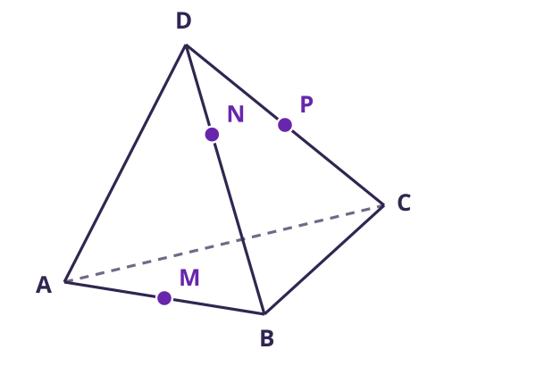
Точки M, N и P — середины рёбер AB, BC и CC₁ куба. Построй сечение плоскостью MNP. Отметь все недостающие вершины и запиши их в порядке обхода контура.
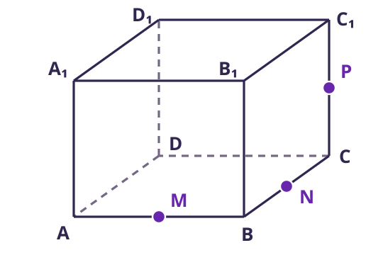
Задачи Д1–Д6 ниже: к каждому сечению — чертёж и список шагов «что соединяю и почему». Выучить три правила построения сечений и свойства параллелепипеда; повторить признаки и свойства параллельности (уроки 2–4).